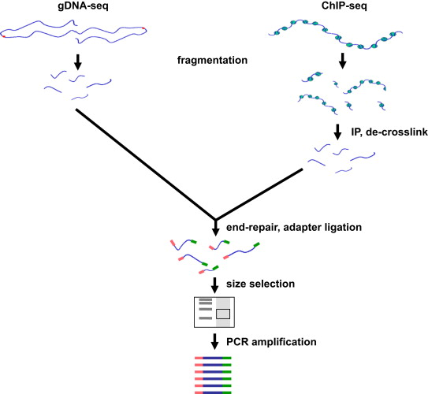
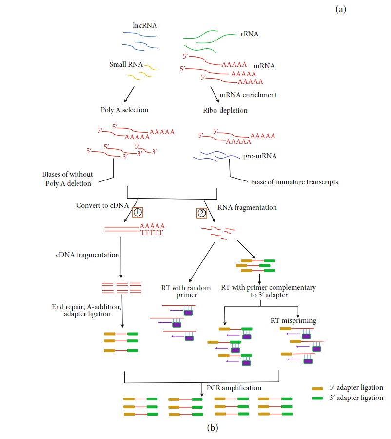

1 Library preparation
Main Causes of poor quality data
Quality of the sequencing data starts before sequencing and library preparation. A proper Nucleic acid extractation is necessary to gurantee a high quantity and purity. Depending on the sample nature and the nucleic acid (RNA or DNA) the extraction proceess may vary, then an appropiate protocol to each situation must be chosen. Thus, a rigorous quality control of the nucleic acid quantification extraction must to be performed, to asses the quantity, purity and integrity. DNA Typically could be measured either UV spectrocopy (Nanodrop) or electrophoresis (Agilent TapeStation), RNA concentration is typically measured by Qubit fluorometer (ThermoFisherScientific).
Danger
RNA is more critical, sample degradation and contamination is more frequent.
Template Preparation
Source: https://doi.org/10.1016/j.humimm.2021.02.012
Library preparation
Selecting a suitable NGS library according to the type of sample (cell type or tissue), and the downstream analysis (WES, WGS, ChipSeq, RNA-seq, …) is essential to gurantee the quality of the data and get de desired information for our research. In a nutshell, library is defined as a collection of nucleic acid (RNA or DNA) fragments of a defined lenght distribution with adapters attached.
Main steps of a Library Preparation Kit:
Fragmentation
Acid nucleic must be broken into smaller fragments. Generally physical and enzimatic fragmentation methods are popular for DNA, whilst chemical fragmentation is more often applied to RNA fragmentation.
End-repair
With the use of enzymes (polymerases) are repaired the 5’ and 3’ overhangs produced during the fragmentation, thus creating blunt ends. Additionally, the 5’ ends are phosphorylated so they are compatible for the adapter ligation process. Some sequencing platforms (as Illumina) may also require the addition of a single adenine base to create a 3’ overhang before adapter ligation.
Adapter ligation
Short sequences of synthetic oligonucleotides (adapters) are attached to both ends of the DNA fragments. These short sequences interact with oligonucleotides on the sequencing instrument’s flow cells to ensure that library is recognised and sequenced. Adapters may also contain a barcode (short index) for multiplexing capabilities, This means that the fragments of the sample are identified when sequencing a pool of samples in the same flow cell.
Amplification
It is an optional step that enbales the sequencing library to be amplified via polymerase chain reaction (PCR), which allows lower samples inputs to be used for library preparation. Can introduce GC bias, duplicates or artifacts that can hinder downstream analysis. In case a good quantity sample is preferable a PCR-free protocols to ensure high library complexity and more readily enable specific applications (like Whole Genome Sequencing and SNP detection).
Purification
removal of unwanted products to leave only the nucleic acid fragments. Often is perfomed size selection by agarose gel or magnetic bead purification.
Quality control
Check if DNA mets the quantity and quality requirements of the sequencing instrument. Assesss the quantity and size distribution of the library.
Note
RNA library preparation is more complex due to the risk of degradation and requires additional steps respect DNA:
Due that RNA is converted to cDNA, PCR-amplified libraries are necessary for many sequencing instruments.
Most of the RNA-seq applications requires the removal of the ribosomal RNA (rRNA), comprising up to 90% of the total RNA.
For especific isolation of mRNA transcripts, in addition to rRNA depletion, poly(A) must be done for selecting the RNAs containing a polyadenilated tail using oligo primers.
DNA library bias
Depending on template, DNA-Seq can include Whole Genome Sequencing (WGS), Whole Exome Sequencing (WES),, Epigenome Sequencing (ChIP-Seq, WGBS) or Targeted Sequencing (TS). Among the different library preparation steps presented earlier, several biases can be introduced during the process. Here are presented the main biases introduced for DNA in each library preparation step and possible solutions to avoid them.
{kind=link}
Fragmentation
Chromatin sonication for ChIP-seq has been shown to be non-random, with euchromatin being sheared more efficiently than heterochromatin.
Tip
To solve this it has been developed the double-fragmentation ChIP-seq protocol.
Size Selection
Agarose gel slices by heating to 50 ºC in chaotropic salt buffer decreased the representation of AT-rich sequences.
Tip
Simple solution to this problem is to melt the gel slices in the supplied buffer at room temperature (18–22 ºC), considerably reducing GC bias.
PCR
Introduce bias in sample composition, due to the fact that not all fragments in the mixture are amplified with the same efficiency. GC-neutral fragments are amplified more efficiently than GC-rich or AT-rich fragments, and as a result fragments with high AT- or GC content may become underrepresented or are completely lost during library preparation
Tip
Ligate adapters that contain all necessary elements for bridge amplification on Illumina flowcells are preferred, eliminating the need for PCR to add these sequences afterwards. Nevertheless, requires relatively large quantities (41 mg) of input material.
In the extreme case of small input amount, the single cell,multiple displacement amplification (MDA) may be the preferred amplification method. MDA is an extremely powerful amplification method, allowing microgram quantities of DNA to be obtained from femtograms of starting material. For this reason, MDA has become the method of choice for whole genome amplification (WGA) from single cells
PCR additives have also been reported to reduce bias, such as betaine or tetramethylammonium chloride (TMAC) may help to further improve coverage of extremely GC-rich or AT-rich regions.
The best overall performing polymerase appears to be Kapa HiFi.
See also
For more information see the publication Library preparation methods for next generation sequencing: Tone down the bias.
RNA library bias
On this section are presented the main source of bias in RNA-seq, and the solutions that could be implemented to reduce it.
{kind=link}
Sample Preservation and Isolation
Degradation of RNA:
Tip
Minimizing the sample processing and freezing and thawing cycles, ensures that RNA is preserved as best as possible.
RNA extraction:
Tip
If possible use high concentrations of RNA samples or avoid TRIzol extraction altogether.
Library Construction
Low-quality and/or low-quantity RNA samples:
Tip
RNase H has been the best method for detecting low-qualityRNA and even could effectively replace the standard RNA-seq method based on oligo (dT). For low-quantity RNA,the SMART and NuGEN approaches had lower duplication rates and significantly decreased the necessary amount of starting material compared to other methods.
mRNA enrichment bias: In eukaryotes enrich for polyadenylated RNA transcripts with oligo (dT) primers have shown that this method remove all non-poly (A) RNAs, such a reolication-dependant histones and lncRNAs (lacking of polyA),or incomplete mRNAs.
Tip
Targeting rRNA as depletion method will not limit to only mRNA molecules, may capture more immature transcripts, leading to a complexity increase of sequencing data (also is more expensive). Subtractive hybridization using rRNA-specific probes as the method that introduced the least bias in relative transcript abundance,
RNA fragmentation bias: There are two major approaches of RNA fragmentation: chemical (using metal ions) and enzymatic (using RNase III). During this process could be introduced lenght biases or errors (propagated to later cycles).
Tip
Studies have shown that methods that involve non specific restriction endonucleases indicate less sequence bias and have been shown to perform similarly to the physical methods. Also enzymatic methoda are easy to automate
Primer bias: During reverse transcription into cDNA by random hexamers can lead to deviation of nucleotide content of RNA sequencing reads, resulting in low complexity of RNA sequencing data.
Tip
Could be avoid using the Illumina Genome Analyzer, which perform the reverse transcription directly on the flowcells, avoiding the PCR. Also has been proposed a bioinformatics tool in a reweighing scheme to adjust for the bias and make the distribution of the reads more uniform.
Adapter ligation bias: Adapter ligation introduces a significant but widely overlooked bias in the results of NGS small RNA sequencing.
Tip
As a solution, several groups propose to randomize the 3’ end of the 5’adapter and the 5’end of the 3’adapter. The strategy is based on the hypothesis that a population of degenerate adapters would average out the sequencing bias because the slightly different adapter molecules would form stable secondary structures with a more diverse population of RNAsequences - Reverse transcription bias: reverse transcriptases tend to produce false second strand cDNA throughDNA-dependent DNA polymerase. ActinomycinD, a compound that specifically inhibits DNA-dependent DNAsynthesis, has been proposed as an agent to eliminate antisense artifacts
Reverse Transcription: A known feature of reverse transcriptases is that they tend to produce false second strand cDNA through DNA-dependent DNA polymerase. This may not be able to distinguish the sense and antisense transcript and create difficulties for the data analysis.
Tip
The deoxyuridine triphosphate (dUTP) method, one of the leading cDNA-based strategies, can be specifically removed by enzymatic digestion
Another method is to synthesize the first strand of cDNA using labeled random hexamer primer and SSS using DNA-RNA template-switching primer
PCR amplification bias: main source of artifacts and base composition bias in the process of library construction:
7.1. Extremely AT/GC-Rich: Fragments of GC-neutral can be amplified more than GC-rich or AT-rich fragments.
Tip
Through the use of custom adapters, the samples without amplification and ligation can be hybridized directly with the oligonucleotides on the flowcell surface, thus avoiding the biases and duplicates of PCR.
However, the amplification-free method requires high sample input, which limits its widely used. The most effective PCR enhancing additives currently used are betaine.
It is an amino acid mimic that acts to balance the differential T m between AT and GC base pairs and has been effectively used to improve the coverage of GC-rich templates - Presence of tetramethylammonium chloride (TMAC) showed that can remarkably increase the amplification of AT-rich regions in Kapa HiFi in the presence. Additionally, a number of additives have been reported to play an important role in reducing the bias of PCR ampli-fication, including small amides such as formamide, small sulfoxides such as dimethyl sulfoxide (DMSO), or reducingcompounds such as β-mercaptoethanol or dithiothreitol(DTT).
7.2. PCR cyle: PCR can exponentially amplify DNA/cDNA templates, thus leading to a significant increase of amplification bias with the number of PCR cycles.
Tip
it is recommended that PCR be performedusing as few cycle numbers as possible to mitigation bias.
See also
For more information see the publication Library preparation methods for next generation sequencing Tone down the bias and Bias in RNA-seq Library Preparation: Current Challenges and Solutions.